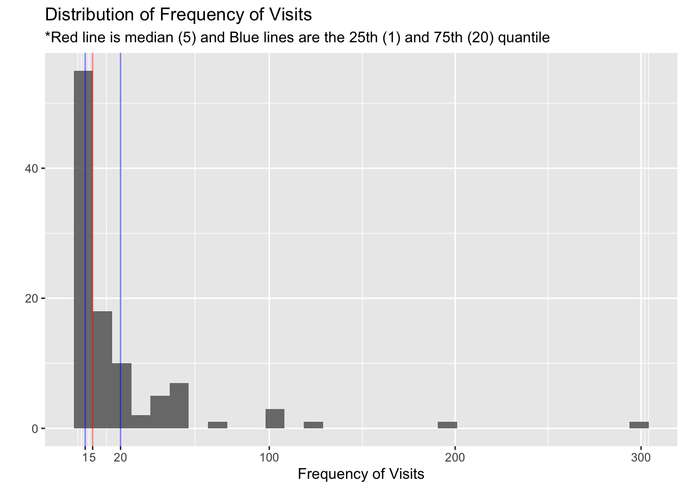
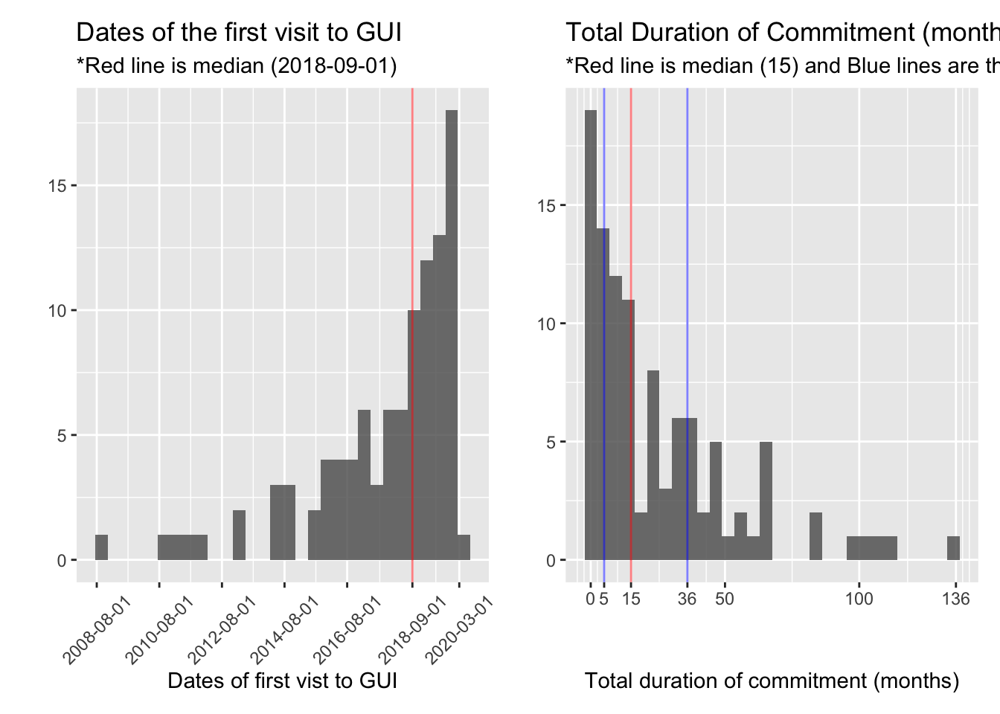
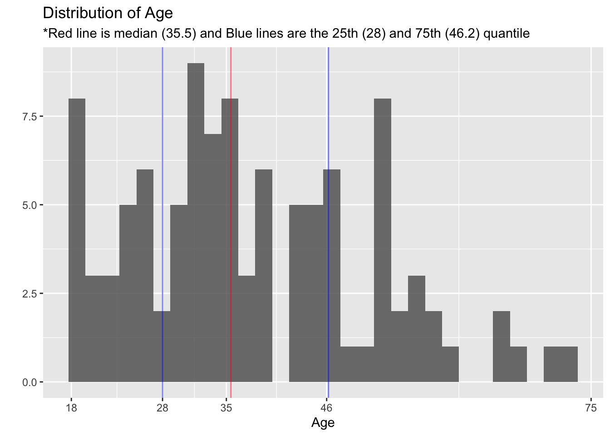
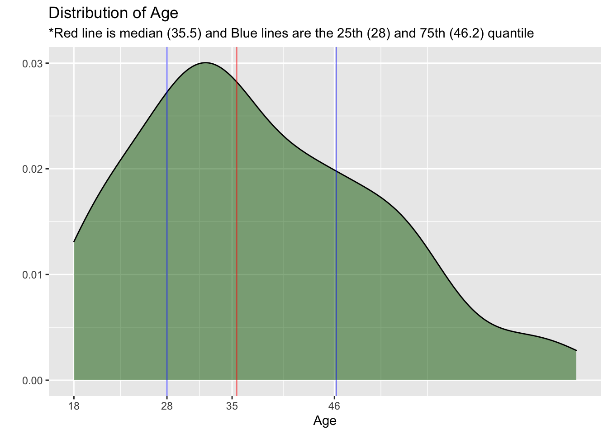
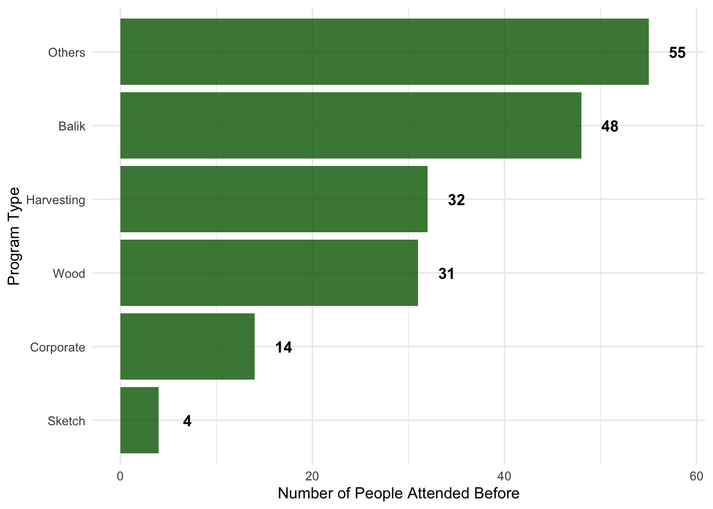
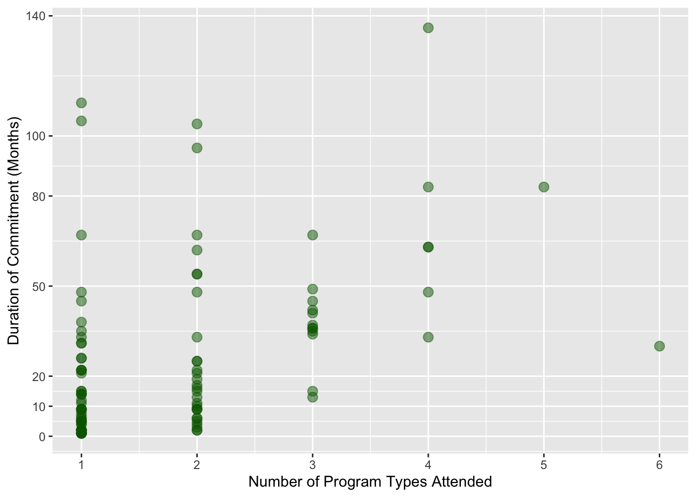
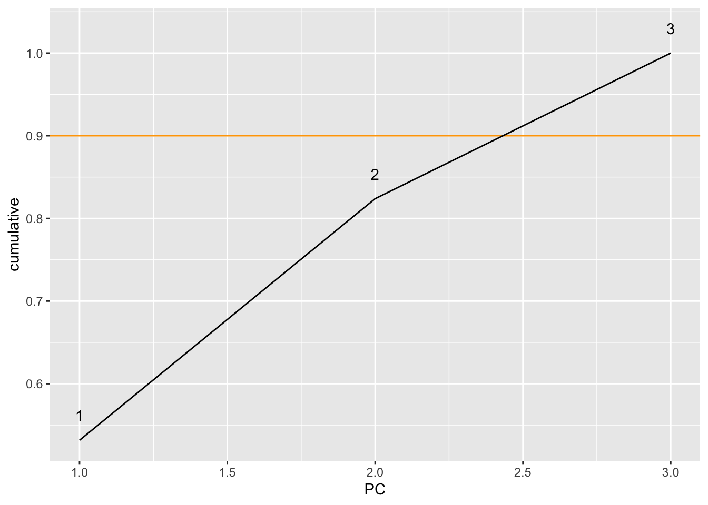
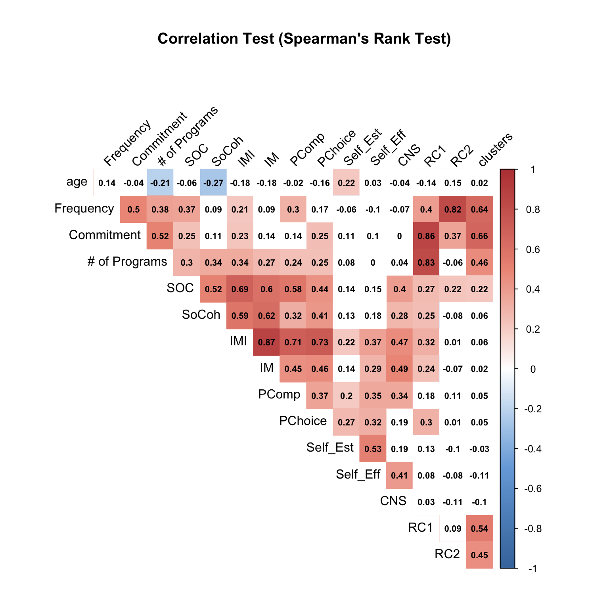

Chapter 3 Online Survey: Analysis of Responses from GUI Members
3.1 Internal Consistency
All scales of psychological measures used in the online survey have good Cronbach’s alpha, ranging from .76 to .92 (good internal consistency). Therefore, we will proceed to include all the questions in the respective scales.
| vars | scales | Cronbachs_Alpha |
|---|---|---|
| 1 | Social Cohesion | 0.76 |
| 2 | Sense of Community | 0.92 |
| 3 | Connection to Nature | 0.89 |
| 4 | Self Esteem | 0.76 |
| 5 | Self Efficacy | 0.91 |
| 6 | Intrinsic Motivation Inventory | 0.78 |
| 7 | Intrisic Motivation (Enjoyment and Interests) | 0.78 |
| 8 | Perceived Competence | 0.45* |
| 9 | Perceived Choice | 0.41* |
| * Perceived Competence and Perceived Choice have only two items, respectively | ||
3.2 Descriptive statistics
| Descriptive Statistics of Major Variables (only GUI Members) | |||||||||||||
|---|---|---|---|---|---|---|---|---|---|---|---|---|---|
| vars | variables | n | mean | sd | median | trimmed | mad | min | max | range | skew | kurtosis | se |
| 1 | Age | 104 | 37.86 | 13.00 | 35.50 | 37.13 | 12.60 | 18.0 | 72.0 | 54.00 | 0.50 | −0.41 | 1.27 |
| 2 | Frequency of Visits (per year) | 104 | 20.39 | 40.75 | 5.00 | 11.54 | 5.93 | 1.0 | 300.0 | 299.00 | 4.28 | 22.77 | 4.00 |
| 3 | Total Duration of Commitment (months) | 104 | 25.53 | 27.97 | 15.00 | 20.54 | 19.27 | 1.0 | 136.0 | 135.00 | 1.64 | 2.56 | 2.74 |
| 4 | Social Cohesion | 104 | 5.92 | 0.87 | 6.00 | 5.98 | 1.19 | 4.0 | 7.0 | 3.00 | −0.42 | −0.96 | 0.09 |
| 5 | Sense of Community | 104 | 5.19 | 1.04 | 5.12 | 5.21 | 1.11 | 2.9 | 7.0 | 4.12 | −0.07 | −0.76 | 0.10 |
| 6 | Connection to Nature | 104 | 5.55 | 0.92 | 5.60 | 5.57 | 0.89 | 3.5 | 7.0 | 3.50 | −0.21 | −0.87 | 0.09 |
| 7 | Intrinsic Motivation Inventory | 104 | 5.71 | 0.73 | 5.75 | 5.73 | 0.74 | 3.9 | 7.0 | 3.12 | −0.29 | −0.45 | 0.07 |
| 8 | Intrisic Motivation (Enjoyment and Interests) | 104 | 5.94 | 0.84 | 6.00 | 6.00 | 1.11 | 4.0 | 7.0 | 3.00 | −0.48 | −0.71 | 0.08 |
| 9 | Perceived Competence | 104 | 5.33 | 0.98 | 5.00 | 5.32 | 0.74 | 2.5 | 7.0 | 4.50 | −0.04 | −0.31 | 0.10 |
| 10 | Perceived Choice | 104 | 5.63 | 0.98 | 5.50 | 5.69 | 1.11 | 3.0 | 7.0 | 4.00 | −0.43 | −0.54 | 0.10 |
| 11 | Self Esteem | 104 | 5.06 | 1.10 | 5.00 | 5.07 | 1.48 | 1.0 | 7.0 | 6.00 | −0.33 | 0.37 | 0.11 |
| 12 | Self Efficacy | 104 | 5.35 | 0.91 | 5.38 | 5.36 | 0.74 | 1.0 | 7.0 | 6.00 | −0.87 | 3.39 | 0.09 |
| Descriptive Statistics of Major Variables (Only Female Members) | |||||||||||||
|---|---|---|---|---|---|---|---|---|---|---|---|---|---|
| vars | variables | n | mean | sd | median | trimmed | mad | min | max | range | skew | kurtosis | se |
| 1 | Age | 75 | 36.75 | 12.59 | 36.00 | 36.44 | 14.83 | 18.0 | 72.0 | 54.00 | 0.24 | −0.78 | 1.45 |
| 2 | Frequency of Visits (per year) | 75 | 17.80 | 39.34 | 4.00 | 9.93 | 4.45 | 1.0 | 300.0 | 299.00 | 5.20 | 32.89 | 4.54 |
| 3 | Total Duration of Commitment (months) | 75 | 26.64 | 27.58 | 16.00 | 22.26 | 20.76 | 1.0 | 111.0 | 110.00 | 1.33 | 1.16 | 3.18 |
| 4 | Social Cohesion | 75 | 5.96 | 0.89 | 6.20 | 6.02 | 1.19 | 4.0 | 7.0 | 3.00 | −0.41 | −1.10 | 0.10 |
| 5 | Sense of Community | 75 | 5.20 | 1.12 | 5.25 | 5.22 | 1.11 | 2.9 | 7.0 | 4.12 | −0.08 | −0.91 | 0.13 |
| 6 | Connection to Nature | 75 | 5.64 | 0.88 | 5.70 | 5.67 | 1.04 | 3.5 | 7.0 | 3.50 | −0.17 | −0.85 | 0.10 |
| 7 | Intrinsic Motivation Inventory | 75 | 5.75 | 0.74 | 5.88 | 5.77 | 0.74 | 3.9 | 7.0 | 3.12 | −0.33 | −0.52 | 0.09 |
| 8 | Intrisic Motivation (Enjoyment and Interests) | 75 | 6.01 | 0.82 | 6.00 | 6.08 | 1.11 | 4.0 | 7.0 | 3.00 | −0.53 | −0.68 | 0.10 |
| 9 | Perceived Competence | 75 | 5.34 | 1.05 | 5.00 | 5.35 | 0.74 | 2.5 | 7.0 | 4.50 | −0.04 | −0.41 | 0.12 |
| 10 | Perceived Choice | 75 | 5.64 | 0.98 | 5.50 | 5.71 | 1.48 | 3.0 | 7.0 | 4.00 | −0.54 | −0.37 | 0.11 |
| 11 | Self Esteem | 75 | 5.12 | 1.14 | 5.25 | 5.16 | 1.11 | 1.0 | 7.0 | 6.00 | −0.59 | 0.68 | 0.13 |
| 12 | Self Efficacy | 75 | 5.44 | 0.91 | 5.50 | 5.48 | 0.74 | 1.0 | 7.0 | 6.00 | −1.38 | 5.88 | 0.10 |
| Descriptive Statistics of Major Variables (Only Male Members) | |||||||||||||
|---|---|---|---|---|---|---|---|---|---|---|---|---|---|
| vars | variables | n | mean | sd | median | trimmed | mad | min | max | range | skew | kurtosis | se |
| 1 | Age | 28 | 41.21 | 13.81 | 35.50 | 40.12 | 8.15 | 27.0 | 70.0 | 43.00 | 0.89 | −0.72 | 2.61 |
| 2 | Frequency of Visits (per year) | 28 | 27.54 | 44.94 | 9.00 | 18.71 | 11.86 | 1.0 | 200.0 | 199.00 | 2.41 | 5.68 | 8.49 |
| 3 | Total Duration of Commitment (months) | 28 | 23.00 | 29.73 | 10.00 | 17.63 | 11.86 | 1.0 | 136.0 | 135.00 | 2.20 | 5.20 | 5.62 |
| 4 | Social Cohesion | 28 | 5.84 | 0.85 | 6.00 | 5.88 | 0.74 | 4.0 | 7.0 | 3.00 | −0.52 | −0.76 | 0.16 |
| 5 | Sense of Community | 28 | 5.21 | 0.82 | 5.12 | 5.21 | 0.93 | 3.6 | 6.8 | 3.12 | −0.03 | −1.04 | 0.15 |
| 6 | Connection to Nature | 28 | 5.35 | 0.94 | 5.20 | 5.37 | 1.33 | 3.5 | 6.8 | 3.30 | −0.24 | −1.18 | 0.18 |
| 7 | Intrinsic Motivation Inventory | 28 | 5.57 | 0.72 | 5.50 | 5.58 | 0.56 | 4.0 | 7.0 | 3.00 | −0.14 | −0.38 | 0.14 |
| 8 | Intrisic Motivation (Enjoyment and Interests) | 28 | 5.71 | 0.87 | 5.88 | 5.74 | 0.93 | 4.0 | 7.0 | 3.00 | −0.27 | −0.95 | 0.16 |
| 9 | Perceived Competence | 28 | 5.30 | 0.82 | 5.50 | 5.29 | 0.74 | 4.0 | 7.0 | 3.00 | −0.16 | −0.86 | 0.16 |
| 10 | Perceived Choice | 28 | 5.55 | 0.96 | 5.50 | 5.56 | 0.74 | 4.0 | 7.0 | 3.00 | −0.09 | −1.07 | 0.18 |
| 11 | Self Esteem | 28 | 4.84 | 0.93 | 4.50 | 4.78 | 0.74 | 3.2 | 7.0 | 3.75 | 0.60 | −0.47 | 0.18 |
| 12 | Self Efficacy | 28 | 5.05 | 0.86 | 5.00 | 5.00 | 1.30 | 3.9 | 6.8 | 2.88 | 0.37 | −1.04 | 0.16 |
3.3 Profile of GUI Members in the sample
3.3.1 Frequency of Visits (per year)
The maximum number of the frequency visits is 300- there is one member who visits GUI almost everyday. The mean and median values for the frequency of visits are 20.4 and 5, respectively. From the below chart, it’s observed that the frequency of visits is skewed to the left (small numbers of visits)-30% of respondents in this study visit GUI on average once a year, and 66% of respondents visit GUI less than 12 times a year (on average less than once a month).
| Name | Piped data |
| Number of rows | 104 |
| Number of columns | 1 |
| _______________________ | |
| Column type frequency: | |
| numeric | 1 |
| ________________________ | |
| Group variables | None |
Variable type: numeric
| skim_variable | n_missing | complete_rate | mean | sd | p0 | p25 | p50 | p75 | p100 | hist |
|---|---|---|---|---|---|---|---|---|---|---|
| frequency_coded | 0 | 1 | 20.39 | 40.75 | 1 | 1 | 5 | 20 | 300 | ▇▁▁▁▁ |

3.3.2 Total Duration of Commitment (month)
The maximum number of durations of commitment is 136- there is one respondent who has been visiting GUI more than 11 years. The mean and median values for the commitment are 25.5 and 15, respectively. From the below chart, it’s observed that the commitment is also skewed towards the shorter durations of commitment-44% of respondents in this study engaged with GUI less than or equal to 1 year(12 months), and 76% of respondents engaged with GUI less than or equal to 3 years (36 months).
| Name | Piped data |
| Number of rows | 104 |
| Number of columns | 1 |
| _______________________ | |
| Column type frequency: | |
| Date | 1 |
| ________________________ | |
| Group variables | None |
Variable type: Date
| skim_variable | n_missing | complete_rate | min | max | median | n_unique |
|---|---|---|---|---|---|---|
| month_year | 2 | 0.98 | 2008-08-01 | 2020-03-01 | 2018-09-01 | 50 |
| Name | Piped data |
| Number of rows | 104 |
| Number of columns | 1 |
| _______________________ | |
| Column type frequency: | |
| numeric | 1 |
| ________________________ | |
| Group variables | None |
Variable type: numeric
| skim_variable | n_missing | complete_rate | mean | sd | p0 | p25 | p50 | p75 | p100 | hist |
|---|---|---|---|---|---|---|---|---|---|---|
| commitment_coded | 0 | 1 | 25.53 | 27.97 | 1 | 5 | 15 | 36 | 136 | ▇▃▁▁▁ |

3.3.3 Frequency and Commitment
The below chart suggests that many of the respondents in this study (36%) are newer members of GUI (less than or equal to 15 months) who visit GUI less than or equal to 5 times per year. Also, the below chart and the result of the correlation test between the two variables indicate that the correlation between frequency and commitment is weak (r=0.235, Pearson): it seems that the longer commitment with GUI does not necessarily lead to a higher frequency of visits.

3.3.4 Gender, Race, and Age
3.3.4.1 Gender and Race
From the below tables, it’s observed that the majority of respondents in this study are female and Chinese. It would be good to check this distribution against the GUI membership directory (if it exists).
| gender | count |
|---|---|
| Female | 75 |
| Male | 28 |
| Others | 1 |
| race | race_type | count |
|---|---|---|
| 0 | NA | 1 |
| 1 | Chinese | 92 |
| 2 | Malay | 2 |
| 3 | Indian | 6 |
| 4 | others | 3 |
3.3.4.2 Age
The age of respondents seems to be well-distributed-it’s slightly skewed to the left (towards the younger age) but there are still 20% of the respondents who are between the age of 50 and 72.
| Name | Piped data |
| Number of rows | 104 |
| Number of columns | 1 |
| _______________________ | |
| Column type frequency: | |
| numeric | 1 |
| ________________________ | |
| Group variables | None |
Variable type: numeric
| skim_variable | n_missing | complete_rate | mean | sd | p0 | p25 | p50 | p75 | p100 | hist |
|---|---|---|---|---|---|---|---|---|---|---|
| age | 0 | 1 | 37.86 | 13 | 18 | 28 | 35.5 | 46.25 | 72 | ▆▇▅▃▁ |


3.3.5 Types of Programs Engaged
The most popular program attended by the respondents is Balik Kampung followed by Harvesting, Wood Workshop, Corporate programs, and Sketching. Among those who selected others, common programs include Farmer’s Market 2019, Pesta Kampung, and Pizza making.
| programs | count |
|---|---|
| Balik | 48 |
| Corporate | 14 |
| Sketch | 4 |
| Wood | 31 |
| Harvesting | 32 |
| Others | 55 |

The below chart indicates that most of the respondents (53%) attended only one of the GUI’s programs. Those who attended any 2 of GUI’s programs are 28%. The below correlation test and scatterplot show that those who engage with GUI in the longer duration attend more number of program types ( r=0.464, Pearson). This means that the longer the member commits on GUI, the more number of types of programs they attend.


3.3.6 Reasons to visit GUI
The most common word used to explain reasons to visit GUI is “Nature” followed by support, community, volunteer, people, activities, and farming. Most of the words listed in the below charts are also mentioned frequently during the focus group discussions.


3.4 Normality Check
All the variables below excepts Sense of Community and Intrinsic Motivation do not follow the normal distribution.
| variables | shapiro_test |
|---|---|
| Age | p <.001 |
| Frequency of Visits (per year) | p <.001 |
| Total Duration of Commitment (months) | p <.001 |
| Social Cohesion | p <.001 |
| Sense of Community | 0.096* |
| Connection to Nature | p <.001 |
| Self Esteem | p <.001 |
| Self Efficacy | p <.001 |
| Intrinsic Motivation Inventory | 0.118* |
| Intrisic Motivation (Enjoyment and Interests) | p <.001 |
| Perceived Competence | p <.001 |
| Perceived Choice | p <.001 |
| *Sense of community and Intrinsic Motivation follows the normal distribution | |
3.5 Gender-wise Analysis
As the difference in the sample size is large (75 female and 28 male), the median test was conducted to see if there are any significant differences between female and male members in the respective variables.
Although the difference in the frequency of visits is large (male members visit GUI more than twice as often as female members do), no significant difference was observed.
Self-efficacy is the only variable that shows a significant difference: female members have a higher sense of self-efficacy.
| Test Statistics: Male vs Female | ||||
|---|---|---|---|---|
| vars | scales | male_median | female_median | Median_test_p_value |
| 1 | Age | 35.50 | 36.00 | 0.64 |
| 2 | Frequency | 9.00 | 4.00 | 0.079 |
| 3 | Commitment | 10.00 | 16.00 | 0.30 |
| 4 | Social Cohesion | 6.00 | 6.20 | 0.40 |
| 5 | Sense of Community | 5.12 | 5.25 | 0.40 |
| 6 | Connection to Nature | 5.20 | 5.70 | 0.82 |
| 7 | Intrinsic Motivation Inventory | 5.50 | 5.88 | 0.25 |
| 8 | Intrisic Motivation (Enjoyment and Interests) | 5.88 | 6.00 | 0.21 |
| 9 | Perceived Competence | 5.50 | 5.00 | 0.61 |
| 10 | Perceived Choice | 5.50 | 5.50 | 0.72 |
| 11 | Self Esteem | 4.50 | 5.25 | 0.09 |
| 12 | Self Efficacy | 5.00 | 5.50 | 0.041* |

3.6 PCA and Cluster Analysis
- We applied Principal Component Analysis and Cluster Analysis to divide GUI members into several groups based on variables that describe their relationships with GUI, including
duration of commitment,frequency of visits, andnumber of program types attended. Hopefully, this will illustrate profiles of GUI members better.
3.6.1 Determining the number of plots
Based on the below, elbow plot, we decided to include the first 2 components that explain 82% of the variance in the three variables.
## # A tibble: 3 x 4
## PC std.dev percent cumulative
## <dbl> <dbl> <dbl> <dbl>
## 1 1 1.26 0.532 0.532
## 2 2 0.936 0.292 0.824
## 3 3 0.727 0.176 1
Component 1 (
RC1) has large positive directions innumber_programsandcommitment_coded.Whereas, component 2 (
RC2) has more positive direction infrequency_codedand some positive directions incommitment_coded.

3.6.2 Determining K
A Hierarchical Cluster Analysis was applied to determine the appropriate number of clusters. Based on the below plots, we decided to take k=4.
hierarchical_clusters <- hclust(dist(cluster_data))
fviz_dend(hierarchical_clusters, k = 4, cex = 0.4) # K= the number of clusters in the dendogram
3.6.3 K-mean clustering

3.6.4 Preliminary Analysis on the clusters
To test the validity of the groups identified, a profile analysis was conducted, including running descriptives on each cluster and ANOVA tests on clusters for each variable.
ANOVA test confirmed that these 4 groups are significantly different ( p <0.001) in terms of the relationships with GUI (
commitment_coded,frequency_coded, andnumber_programs).Age is also significantly different among clusters ( p <0.05).
Although the ANOVA test did not show any significant differences in the rest of the variables, the table A and the boxplots seem to show some variances among clusters. For example, Sense of Community is very low in the cluster 1.
| clusters | balik_c | corporate_c | sketch_c | wood_c | harvesting_c | others_c |
|---|---|---|---|---|---|---|
| 1 | 23 | 5 | 1 | 11 | 15 | 33 |
| 2 | 24 | 9 | 3 | 15 | 16 | 18 |
| 3 | 1 | 0 | 0 | 1 | 0 | 1 |
| 4 | 0 | 0 | 0 | 4 | 1 | 3 |
| Table A: Median Values by Groups | ||||||||||||||||
|---|---|---|---|---|---|---|---|---|---|---|---|---|---|---|---|---|
| clusters. | male | female | members_n | age | frequency_coded | commitment_coded | number_programs | SoCoh | SOC | IMI | IM | PComp | PChoice | CNS | Self_Est | Self_Eff |
| 1 | 17 | 49 | 67 | 36.0 | 2 | 8.0 | 1.0 | 6.0 | 4.88 | 5.75 | 6.00 | 5.00 | 5.50 | 5.7 | 5.00 | 5.50 |
| 2 | 7 | 21 | 28 | 31.0 | 20 | 48.5 | 3.0 | 6.2 | 5.69 | 5.88 | 6.12 | 5.25 | 5.75 | 5.5 | 5.25 | 5.38 |
| 3 | 1 | 1 | 2 | 51.5 | 250 | 46.5 | 1.5 | 5.5 | 5.44 | 5.38 | 5.38 | 5.75 | 5.00 | 5.6 | 4.38 | 5.44 |
| 4 | 3 | 4 | 7 | 55.0 | 70 | 31.0 | 1.0 | 6.0 | 5.25 | 5.50 | 6.25 | 5.00 | 5.50 | 5.4 | 4.50 | 5.00 |

3.6.5 Interpreting the clusters
Based on the below directional plot and the Table A,
X1or group 1 can be categorized as fresh members of GUI (n=67): those who recently started coming to GUI (on average within 8 months), their frequency of visits is low (only twice a year), and they haven’t attended many programs yet. Perhaps, these members are still exploring how to engage with GUI.X2or group 2 is the most senior (or experienced) members of GUI ( long-term members, n=28): those who committed with GUI for the longest period (on average 4 years) and have attended many different programs (on average 3).X3or group 3 can be refered as everyday visitors (n=2): their engagement with GUI is relatively long (about 4 years) and they visit GUI almost everyday (more than 20 times a month).X4or group 4 can be interpreted as committed frequent visitors (n=7): they are relatively long-term members of GUI (on average 2 and half years) and their frequency of visit is high (on average 70 times a year). They seem keep coming to the same program.Group 3 and Group 4 have much older members and higher frequency of visits, compared to Group 1 and Group 2. Therefore, the older members of GUI tend to visit there more frequently.
The Connection to Nature is highest in the Group 1, suggesting that GUI tends to attract new members who have a high sense of Nature Connection.

3.7 Median Test: Fresh Members VS Long-term Members
Although the ANOVA test did not find any sigfnificant differences in the psychometric scales across the groups, the difference in the median of Sense of Community between the fresh_members and long term members is hgih. Hence, we ran the Median Test.
A significant difference ( p =0.014) was found in Sense of Community: hence, the long-term engagement with GUI seems to enhance a Sense of Community of GUI members.
Committed frequent visitors and Everyday visitors did not show a significant difference in Sense of Community when it’s compared with fresh_members. Perhaps, this is due to the small number of group size (7 and 2, respectively).
Median.test(old_new$SOC, old_new$clusters) # Sense of Community is significant. P=0.014
Median.test(old_new$CNS, old_new$clusters) # CNS is not significant. p=0.374
Median.test(old_new$IMI, old_new$clusters) # IMI is not significant. p=0.491
Median.test(old_new$SoCoh, old_new$clusters) # Social Cohesion is not significant. p=0.333
Median.test(old_new$Self_Est, old_new$clusters) # Self-est is not significant. p=0.433
Median.test(old_new$Self_Eff, old_new$clusters) # Self-eff is not significant. p=0.494
Median.test(old_new$IM, old_new$clusters) # IM is not significant. p=0.64
Median.test(old_new$PComp, old_new$clusters) # PComp is not significant. p=0.947
Median.test(old_new$PChoice, old_new$clusters) # PChoice is not significant. p=0.7393.8 Age Group Comparison
| age_group | frequency_coded | commitment_coded | number_programs | SoCoh | SOC | IMI | IM | PComp | PChoice | CNS | Self_Est | Self_Eff |
|---|---|---|---|---|---|---|---|---|---|---|---|---|
| youth (<28) | 13.88 | 29.92 | 2.20 | 6.34 | 5.35 | 5.94 | 6.21 | 5.38 | 5.96 | 5.38 | 4.62 | 5.20 |
| adults (28 to 35) | 29.44 | 26.74 | 1.81 | 6.08 | 5.33 | 5.90 | 6.09 | 5.61 | 5.81 | 5.85 | 4.99 | 5.29 |
| older_adults (36 to 46) | 8.73 | 17.85 | 1.42 | 5.66 | 4.93 | 5.37 | 5.64 | 4.94 | 5.25 | 5.62 | 5.48 | 5.62 |
| young_seniors_&_seniors (>46) | 28.92 | 27.73 | 1.65 | 5.62 | 5.17 | 5.62 | 5.80 | 5.37 | 5.50 | 5.32 | 5.14 | 5.29 |
| age_group | balik_c | corporate_c | sketch_c | wood_c | harvesting_c | others_c |
|---|---|---|---|---|---|---|
| youth (<28) | 20 | 5 | 1 | 7 | 11 | 11 |
| adults (28 to 35) | 13 | 3 | 2 | 6 | 10 | 15 |
| older_adults (36 to 46) | 7 | 2 | 1 | 6 | 5 | 16 |
| young_seniors_&_seniors (>46) | 8 | 4 | 0 | 12 | 6 | 13 |
3.9 Correlation Analysis
Correlation Test (Spearman's Rank Test)shows correlation r by the figures and highlights: towards shades of blue mean negative and shades of red mean positive correlations. Those squares with no highlights (white) are non-significant correlations (p> 0.05).It’s observed that Sense of Community (
SOC), Social Cohesion (SoCoh), and Intrinsic Motivation Inventry (IMI) show significant correlations (moderate to strong) among them.The subset of Intrinsic Motivation Inventry (
IMI), including Intrinsic Motivation (enjoyment/ intetests:IM), Perceived Competence (PComp) and Perceived Chocie (PChoice) also show significant correlations withSOCandSoCoh(however, the correlations are weaker compared to the ones withIMI)Frequency (
frequency_coded) and commitment (commitment_coded) also show moderate to strong correlations (Spearman). However, as discussed earlier, the correlation test with Pearson only showed a weak correlation (r=0.23, Pearson).1) those who visit GUI frequently and 2) those who commit GUI in the long duration seem to have a higher sense of community and a higher Intrinsic Motivation (
IMI). Earlier studies from Community Psychology support these findings: sense of community and intrinsic motivation can be built through frequent interactions over the long term (Christens & Peterson, 2010; Bidee, 2013; Oostlander et al., 2013).It is interesting to note that Perceived Competence (
PComp) shows a significant correlation withFrequency, whereas Perceived Choice (PChoice) is significantly correlated withCommitment
There is a strong correlation between Nature Connection (
CNS) and Intrinsic Motivation (IMI) (r=0.465)__, implying that those who are self-motivated also have a high sense of nature connection.The number of program types attended (
# of Programs) shows significant positive correlations withFrequency,Commitment, Sense of Community (SOC), Social Cohesion (SoCoh), and Intrinsic Motivation (IMI). Hence, more committed members with a higher sense of community engage in a variety of programs. It is also interesting to note that# of Programsshows a significant negative correlation withage: older GUI members attend less variety of GUI programs.This correlation test did not show significant correlations between 1) frequency and commitment, and 2) Social Cohesion (
SoCoh) and Nature connection (CNS). This suggests that Social Cohesion and Nature Connection can be built among GUI members regardless of their duration of commitment and frequency of visits. As the focus group discussion with GUI volunteers noted, perhaps GUI members can gain a sense of Social Cohesion immediately through their engagement at GUI. Regarding the Nature Connection, it seems that those who visit GUI already have a higher sense of nature connection. Therefore, it doesn’t seem to change so much over time.

3.10 Regression Analysis
3.10.1 Frequency, Commitment, and Number of Programs as Inputs
As significant correlations were found among frequency, commitment, number of programs attended, Sense of Community, and Intrinsic Motivation, this study conducted a regression analysis on these variables.
Among the several models, the models with
SOC,IMI, andSelf_Estare the significant models: Higher values inFrequencyand# of Programswill lead to higherSOC. Similary, higher values in# of Programswill lead to higher Intrinsic Motivation (IMI) and Enjoyments/ interests (IM).However, these models have relatively low R-squared (0.10 to 0.164): these models explain 10 to 16% of the outcome variables. Further investigation is required to examine which are the factors, missed out from this study, may have potential effects on the outcomes.
model_gui_3 <- lm(IMI ~ `# of Programs`, data = model_data)
summary(model_gui_3) # R-squared =0.10. Number of programs is Significantmodel_gui_4 <- lm(Self_Est ~ age + Frequency + `# of Programs`, data = model_data)
summary(model_gui_4) # R-squared =0.11. Age and Frequency are Significantmodel_gui_5 <- lm(Self_Eff ~ age + Frequency + `# of Programs`, data = model_data)
summary(model_gui_5) # Not significantmodel_gui_6 <- lm(formula = IM ~ age + Commitment + `# of Programs` + clusters,
data = model_data)
summary(model_gui_6) # R-squared is 0.164. Number of programs and cluster 2 are significantmodel_gui_7 <- lm(formula = PComp ~ `# of Programs`,
data = model_data)
summary(model_gui_7) # R-squared is 0.065. Number of programs is significantmodel_gui_8 <- lm(formula = PChoice ~ `# of Programs`,
data = model_data)
summary(model_gui_8) # R-squared is 0.039. Number of programs is significant| Outcome Variables | R-squared | Positive Coefficients | Negative Coefficients |
|---|---|---|---|
| Sense of Community | 0.148 | # of Programs, Frequency |
NA |
| Nature Connection | Not significant | NA | NA |
| Intrinsic Motivation Inventory | 0.10 | # of Programs |
NA |
| Intrinsic Motivation (Enjoyment/ Interests) | 0.164 | # of Programs |
Cluster 2 (compared to cluster 1) |
| Perceived Competence | 0.065 | # of Programs |
NA |
| Perceived Choice | 0.039 | # of Programs |
NA |
| Self Esteem | 0.11 | age |
Frequency |
| Self Efficacy | Not significant | NA | NA |
3.10.2 Other Psychometric Scales as Inputs
model_gui_9shows the highest R-squared among all the models. The model explains 53% of variance in the Intrinsic Motivation (Enjoyment/ Interests): HigherSoCohandSOCwill lead to higer levels of enjoyment/ interests among the GUI members.model_gui_10explains 46% of the variance in the Self Efficacy (Sef_Eff): higher Perceived Competence (PComp) and lower Sense of Community will lead to higher sense of Self Efficacy.
3.11 Comparing The Long-term Members and The General Public
Results of ANOVA test shows significant differences only in the Nature Connection (
CNS) (P =0.035)Post hoc test shows that the significance difference was observed between cluster 1 (fresh members) and cluster 5 (non GUI members).
To see the differences between the non GUI members and Long-term members, median test was conducted: no significance differences were observed in the
CNS,Self_Est, andSelf_Eff. It implies that non GUI members are not significantly different from Long-term GUI Members in terms of their sense of nature connection, self-esteem, and self-efficacy.
| Median Test Results: Non GUI and Long-term GUI Members | |||
|---|---|---|---|
| Variables | Median of Non GUI | Median of Long-term GUI | p Value |
| Nature Connection | 5.10 | 5.50 | 0.14 |
| Self Esteem | 4.75 | 5.25 | 0.22 |
| Self Efficacy | 5.25 | 5.36 | 0.76 |